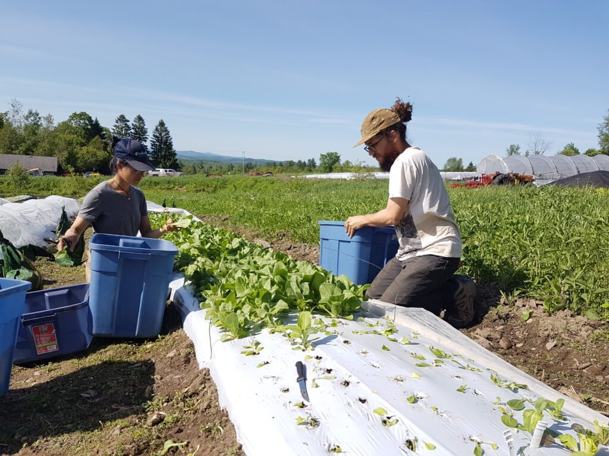

Aux temps possibles est mon ambitieux projet de grande envergure. Il consiste à mettre plusieurs idées écologiques dans le même panier; de la ferme jusqu’à l’assiette.
Comment? Tout le monde peut participer au projet et sont invité(e)s à amener des idées de toutes sortes en complémentarité avec la vision écologique de Aux temps possibles.
La première plateforme qui donnera lieu à ce formidable projet est Youtube. Pourquoi? Car le public peut s’étendre jusqu’au bout du monde et que le bût premier est de rendre accessible l’information pour changer notre quotidien tout en ayant l’intelligibilité de le rendre disponible à plus large public.
